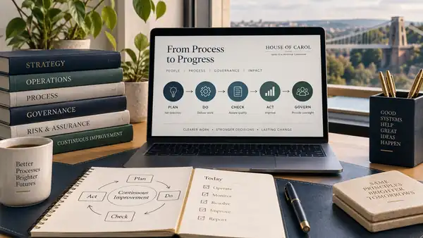

9 services
Operations, process & governance
For work that depends on memory, rescue, unclear ownership or hand-offs that become problems in the gaps between teams.
53 services · seven areas
A process that only works because somebody remembers it. An AI idea with no sensible boundary. Reporting nobody trusts. Research nobody has time to do properly. Begin there.
The catalogue is organised around the work, not our internal structure. Every service has a defined scope, price and boundary; every service also has a separate illustrative case study so you can inspect the shape of the problem without being sold a fictional success story.

Choose a service area
Seven ways into the catalogue, because organisations rarely experience problems according to somebody else’s org chart.

9 services
For work that depends on memory, rescue, unclear ownership or hand-offs that become problems in the gaps between teams.

15 services
For deciding where AI belongs, where it does not, how to govern it and how to turn one useful idea into a working method.
6 services
For the unglamorous machinery that matters: bids, opportunities, purchasing, invoicing and cash moving when it is supposed to.

5 services
For building capability around real work rather than filling calendars with courses and hoping competence appears afterwards.
5 services
For questions with too much evidence, too little time, or a recurring need to turn information into something people can actually use.
7 services
For organisations where good administration must coexist with public responsibility, evidence, scrutiny and constrained resources.
6 services
For the temporal work that keeps parish life possible: funding, buildings, administration, governance, digital choices and communications.
See the work in context
Each service now has its own composite illustration. They are deliberately labelled as illustrations, not customer evidence. Three longer worked examples remain below for the jobs where seeing the sequence is especially useful.

Operations
See how one recurring process can move from informal hand-offs to a clearer route, named ownership and a usable SOP.
Illustrative example — not a real customer or claimed result.
See the process example →
Customer journey
Follow a fictional trade-account journey across customer touchpoints, internal hand-offs and controls.
Illustrative example — not a real customer or claimed result.
See the journey example →AI workflow
See how a low-consequence recurring task can be assessed, bounded, tested and handed back to a human operator.
Illustrative example — not a real customer or claimed result.
See the AI workflow example →Not sure which area fits?
Tell us what is happening, what you need to be different and any timing or boundary that matters. We will identify the service that most closely matches the work.
Discuss the outcome you need